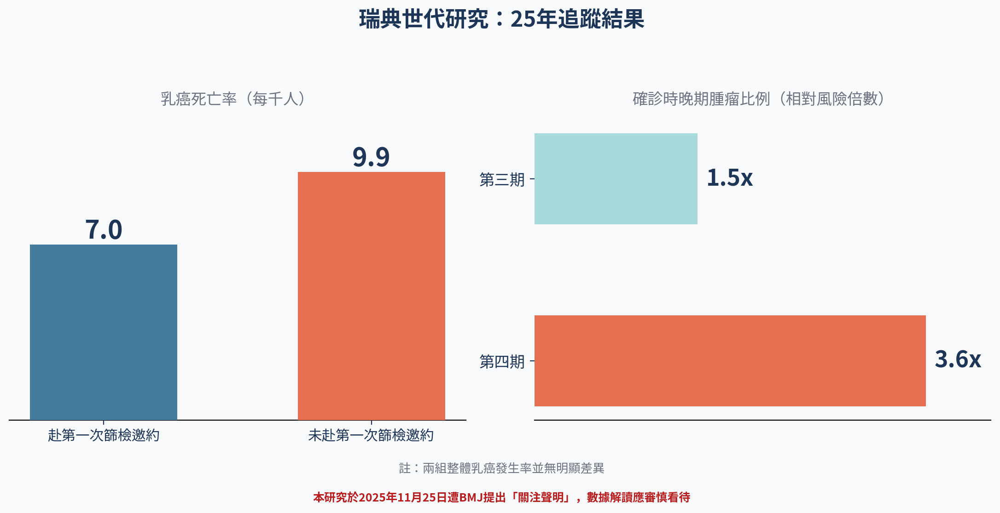
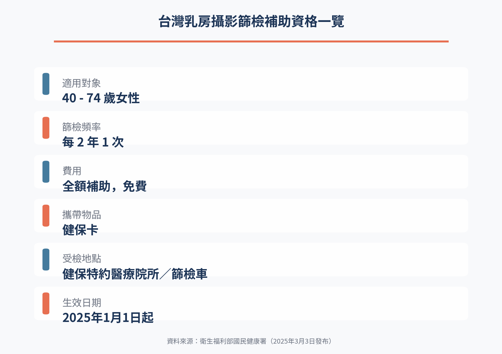

第一次沒去，25 年後的代價
瑞典 43 萬人追蹤 25 年：未赴首次乳篩邀約者乳癌死亡率較高、確診期別較晚——但這篇論文已被《BMJ》公開列出關注聲明。
台灣的乳房攝影補助 2025 年起擴大到 40 至 74 歲，資格這道門檻已經降得很低，仍有超過三分之一符合資格的女性從未做過。這篇研究問的是另一件事：如果連第一次邀請都沒赴約，往後 25 年會發生什麼。
乳癌是台灣女性發生率第一名、死亡率第二名的癌症，2022年新增病例達17,366人，奪走2,834條生命[1]。定期做乳房X光攝影（乳房攝影術），能在腫瘤還小、症狀還沒出現前就把它揪出來。早期乳癌的五年存活率超過九成，一旦拖到晚期才發現，這個數字會掉到只剩約三成九[1]。
道理大家都懂，難的是「真的去做」。不少女性對第一次乳房攝影卻步，理由通常不是不相信篩檢有用，而是怕痛、怕輻射、怕檢查出什麼，或單純不知道該去哪裡預約。實際上一次乳房攝影的壓迫時間只有幾秒鐘，輻射劑量也遠低於一般人的想像，這點風險，遠遠比忽略身體異狀來得小。台灣的乳房攝影補助對象從2025年1月1日起，由原本45至69歲擴大為40至74歲女性，每兩年可接受一次免費篩檢[1]。補助範圍擴大解決的是「有沒有資格」，不是「會不會去」。即使是政策推動多年、原本45至69歲的高風險族群，仍有約34.5%的女性從未做過任何一次乳房攝影篩檢[2]。這也是一篇新研究真正切題的地方：如果連第一次篩檢邀請都沒赴約，25年後要付出什麼代價？
新知報導：43萬人、25年追蹤，卻在發表後遭出版方公開質疑
2025年9月，《英國醫學期刊》（BMJ）刊出一篇世代研究，追蹤了瑞典斯德哥爾摩432,775名受邀參加乳房攝影篩檢的女性，時間橫跨1991年到2020年，最長追蹤達25年[3]。32.1%（138,760人）沒有赴第一次篩檢邀約。這群人往後25年的乳癌死亡率為千分之9.9，赴約者則是千分之7.0，調整後風險高出約四成。未赴約者確診時，第三期腫瘤的比例高出1.5倍，第四期則高出3.6倍。但兩組人的整體乳癌發生率並沒有明顯差異，作者因此推論：多出來的死亡，主要不是因為未赴約者罹癌機率比較高，而是他們往後也持續較少回診篩檢，導致腫瘤被發現時已經偏晚[3]。
必須誠實說明：這篇研究在2025年11月25日被BMJ官方公開列出「關注聲明」（Expression of Concern），對象包含論文本身與同期刊登的社論，聲明指出文章在關鍵訊息的呈現上，可能沒有被資料完整支持[3]。關注聲明不等於論文被撤回，是期刊在正式調查釐清爭議之前，先公開提醒讀者這篇文章的部分結論可能站不住腳，要保持謹慎。四成這個數字，目前正處於學術界公開檢視、尚未有定論的狀態，不該被當成已經蓋棺論定的鐵律。媒體標題若直接寫「不篩檢死亡率增4成」，其實跳過了這一層但書。
把鏡頭拉遠一點，「規律參與篩檢能降低乳癌死亡率」這個大方向，早就建立在比這篇更穩固的證據之上，不會因為單一世代研究受到質疑就整個動搖。一份整合9項乳房攝影隨機對照試驗的統合分析顯示，若只看邀請篩檢、不論是否實際赴約的意向治療分析，死亡率下降幅度為22%；若進一步依實際赴約情形調整，下降幅度提高到30%（95%信賴區間18%至42%）。這代表「真的去做篩檢」這件事本身，其保護效果在隨機對照試驗層級已經相當一致[4]。美國預防服務工作小組（USPSTF）在2024年也依此更新指引，建議40至74歲女性每兩年做一次乳房攝影，列為B級建議[5]。

和病人有什麼關係？台灣用得到嗎？健保有給付嗎？
對正在猶豫要不要做第一次乳房攝影的讀者，這篇研究連同它引發的爭議，給的實際訊息其實不是「錯過一次篩檢就必死無疑」，而是「錯過的往往不只一次」。瑞典資料裡真正拉開差距的，是未赴約者後續持續缺席篩檢所累積出來的晚期發現風險，不是單一次的缺席本身。與其被一個仍在學術圈公開檢視中的數字嚇到，不如把它當成一個提醒：如果你已經好幾年沒做過篩檢，現在是回頭把它排進行事曆的時候。如果你有乳癌家族史、BRCA基因帶因等個人風險因子，篩檢頻率與方式應該和醫師討論，不宜自行依單一研究結果調整。
好消息是，這件事在台灣真的用得到，也真的有給付。國民健康署自2025年1月1日起，已把乳房X光攝影補助對象從45至69歲，擴大到40至74歲女性，每兩年可接受一次免費篩檢，符合資格者攜帶健保卡到特約醫療院所或篩檢車就能受檢，不需額外自費，也不需要醫師轉介[1]。台灣的制度已經把「有沒有資格篩檢」這道門檻大幅放寬，剩下的變數，是每一位符合資格的女性願不願意真的走進去做這第一次檢查。
台灣目前仍有超過三分之一符合資格的女性從未受檢[2]，這正是這篇瑞典研究，不論它最終在學術審查中站不站得住腳，對台灣讀者最有意義的提醒。另外要提醒的是，乳房攝影對緻密型乳房（東方女性比例偏高）的偵測敏感度較低。若醫師評估你屬於緻密型乳房或屬於高風險族群，是否需要加做乳房超音波等輔助檢查，目前國際指引仍列為證據不足、需要個別化討論的項目，這部分務必與醫師當面確認，而非自行上網比對決定[5]。如果你符合40至74歲的資格、還沒排過第一次乳房攝影，看完這篇文章，具體能做的下一步，就是打電話給住家附近的特約醫院或衛生所，問一句：「我可以預約免費乳房攝影嗎？」

這一篇要連同它的爭議一起讀。《BMJ》已於 2025 年 11 月 25 日對這篇論文與同期社論發出關注聲明，指出關鍵訊息可能沒有被資料完整支持；關注聲明不是撤稿，但「不篩檢死亡率增四成」這種標題目前站不住腳。真正穩固的證據在更上游：九項隨機試驗的統合分析顯示，依實際赴約情形校正後，死亡率下降 30%（95% 信賴區間 18% 至 42%）。而且瑞典資料裡拉開差距的，是未赴約者後續持續缺席所累積的晚期發現風險，不是單一次的缺席。台灣現況：40 至 74 歲女性每兩年一次公費乳房攝影，帶健保卡到特約院所或篩檢車即可，不需醫師轉介。緻密型乳房要不要加做超音波，國際指引仍列為證據不足、需個別化討論，請當面問醫師。
參考資料
1. 衛生福利部國民健康署（2025）。乳癌篩檢年齡擴大至40-74歲婦女。衛生福利部，2025年3月3日發布。
2. 健康醫療網（2024）。乳癌篩檢將放寬！明年40歲以上、未滿75歲女性 皆可免費乳房X光檢查。健康醫療網，2024年9月14日。
3. Ma Z, He W, Zhang Y, Mao X, Tapia J, Hall P, Humphreys K, Czene K (2025). First mammography screening participation and breast cancer incidence and mortality in the subsequent 25 years: population based cohort study. BMJ, 390:e085029. doi:10.1136/bmj-2025-085029.（本文於2025年11月25日遭BMJ公開列出Expression of Concern關注聲明，資料解讀請審慎參考）
4. Jacklyn G, Glasziou P, Macaskill P, Barratt A (2016). Meta-analysis of breast cancer mortality benefit and overdiagnosis adjusted for adherence: improving information on the effects of attending screening mammography. British Journal of Cancer, 114, 1269-1276. doi:10.1038/bjc.2016.90.
5. US Preventive Services Task Force（2024）。Breast Cancer: Screening. Final Recommendation Statement, Grade B, 2024年4月30日。
本文為一般性衛教說明，整理自公開發表的研究與官方公告，不能取代面對面的診療。研究結果適用的族群通常有嚴格條件，是否適用於你的情況，請與你的主治醫師討論。請勿依據本文自行調整、中斷或更換治療。
← 回到醫學新知